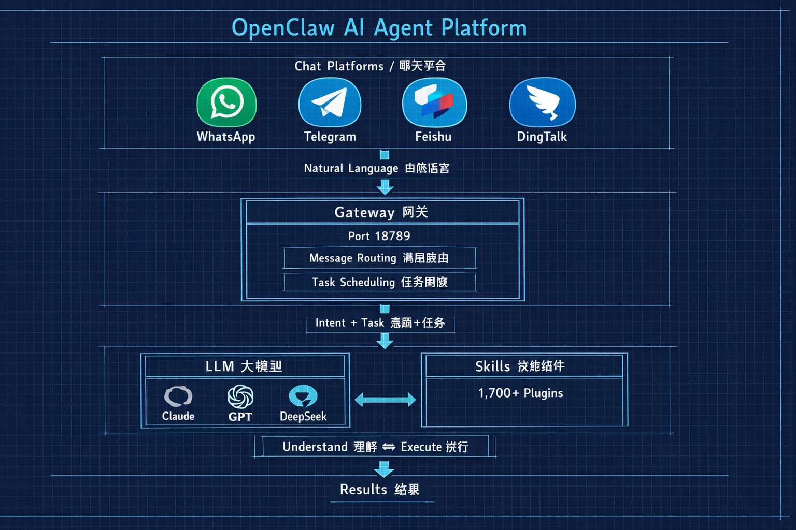
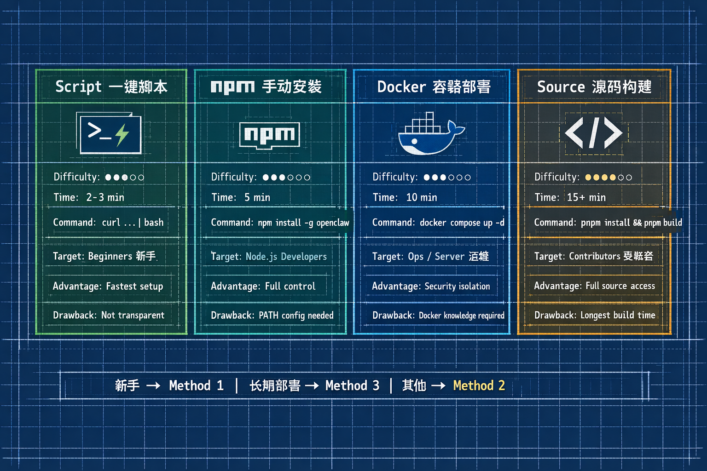
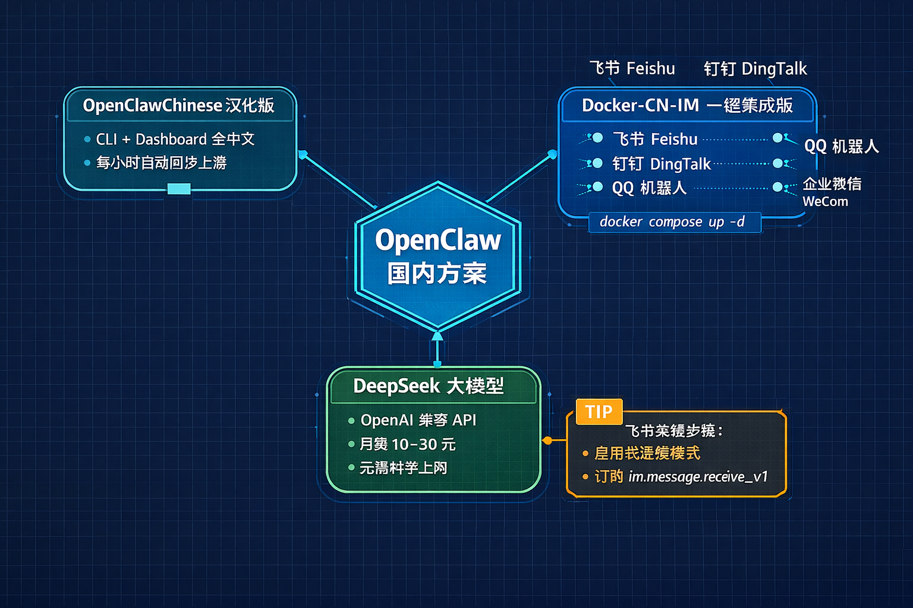
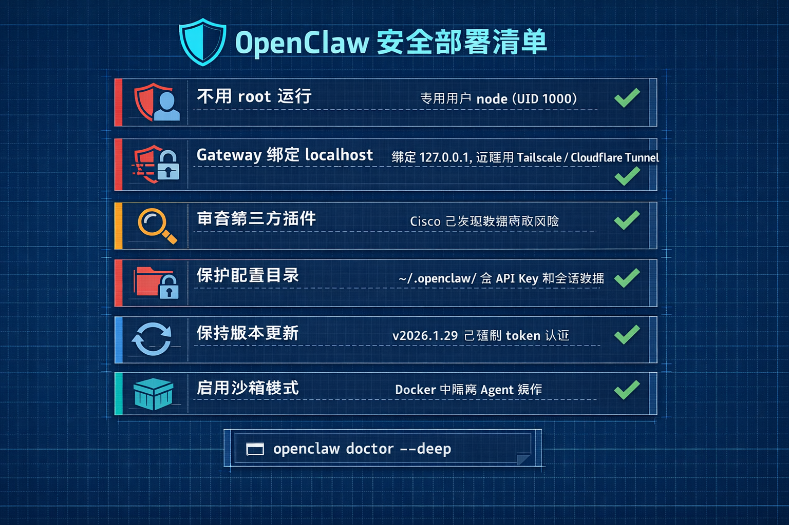

早上还没睁眼，你的 AI 助手已经在飞书群里贴好了昨晚未读邮件的摘要，把今天的会议议程整理成了待办清单。
这不是科幻电影的桥段。一个叫 OpenClaw 的开源项目正在把这件事变成现实——GitHub 上 19 万颗 Star，三个月内三次更名，创始人刚被 OpenAI 挖走。
但对大多数人来说，"AI Agent" 三个字还停留在新闻标题里。真正的门槛不是 AI 本身，而是迈出第一步：把它装到自己电脑上。
如果你对 AI 应用感兴趣，能打开终端输入几行命令，接下来这篇指南就是为你准备的。
先说清楚一件事：OpenClaw 不是一个 AI 模型。
它是一个"连接器 + 执行器"。说白了，它把 Claude、GPT、DeepSeek 这些大模型的"聪明"，转化成了"能干活"。
举个例子：你在 Telegram 上发一句"帮我总结今天收到的邮件"，OpenClaw 就会调用大模型理解你的意图，然后真的去读你的邮箱、提取关键信息、返回一份整齐的摘要。
这就是 AI Agent（智能体）和普通聊天机器人的区别。聊天机器人只能一问一答，而智能体能自主执行多步骤任务，比如收发邮件、管理日历、编写代码、操作文件，全凭一句自然语言指令。
从架构上看，OpenClaw 分三层：
底层是聊天平台（WhatsApp、Telegram、飞书、钉钉等），中间是 Gateway 网关，监听 18789 端口做消息路由，顶层是大模型配合 1700 多个技能插件来执行任务。

所有配置和对话历史都存在你自己的设备上，不经过第三方云服务器。项目采用 MIT 开源协议。
2026 年 2 月创始人 Peter Steinberger 加入 OpenAI 后，已将项目移交独立基金会管理，治理模式参照 Linux 基金会框架，开源属性不受影响。
花五分钟确认环境到位，能避免 80% 的安装失败。
操作系统：macOS 和 Linux 原生支持，Ubuntu 兼容性最佳。Windows 用户强烈建议通过 WSL2（Windows 内置的 Linux 子系统）来运行，直接在 Windows 上安装会遇到各种兼容性问题。
核心依赖：Node.js 版本必须 >= 22，这是硬性要求。打开终端检查一下：
node -v
# 如果版本低于 22，用 nvm 升级
nvm install 22 && nvm use 22三样东西提前准备好：
安全提示：首次体验建议在测试环境中进行。Cisco 安全团队 2026 年 2 月已发现第三方插件存在数据窃取风险，不要急于在主力设备上安装。
如果你打算用 Docker 方式部署，还需要提前装好 Docker Desktop 或 Docker Engine。
不确定选哪个？新手选方法 1，想长期跑选方法 3，其他情况选方法 2。
最省事的方式，一行命令搞定：
curl -fsSL https://openclaw.ai/install.sh | bash脚本会自动检测系统环境、安装 Node.js 依赖、下载 OpenClaw。完成后紧接着运行引导向导：
openclaw onboard --install-daemon向导会带你走完 8 步配置：选择 LLM 提供商、填入 API Key、配置聊天通道、注册守护进程。macOS 用户从开始安装到发送第一条消息，全程大约 5 分钟。
唯一的缺点是脚本不透明，遇到问题不好排查。谨慎起见，可以先下载脚本看看内容再执行。
如果你熟悉 Node.js 生态，两步完成：
npm install -g openclaw@latest
openclaw掌控感更强，升级也方便。但有个常见坑：npm 全局路径没加入 PATH，导致终端找不到命令。
遇到 openclaw: command not found，执行这行修复：
export PATH="$PATH:$(npm config get prefix)/bin"
# 写入配置文件使其永久生效
echo 'export PATH="$PATH:$(npm config get prefix)/bin"' >> ~/.zshrc想在 VPS 上 24 小时跑 OpenClaw，Docker 是最稳妥的选择：
git clone https://github.com/openclaw/openclaw.git
cd openclaw
./docker-setup.sh
docker compose up -d容器默认以非 root 用户（node, UID 1000）运行，可以启用沙箱模式隔离 Agent 操作。
配置和工作区数据通过卷挂载持久化，升级只需拉取最新镜像重启容器。推荐至少 2 vCPU、4GB RAM。
想参与开源贡献或深度定制：
git clone https://github.com/openclaw/openclaw.git
cd openclaw
pnpm install && pnpm build构建时间较长，需要额外安装 pnpm 包管理器，一般用户没必要走这条路。

你不需要"硬啃"英文原版。国内社区做了不少本地化工作。
汉化版 OpenClaw：GitHub 上的 MaoTouHU/OpenClawChinese 项目提供了 CLI 和 Dashboard 全中文界面，每小时自动同步上游代码，安装体验与原版一致。换句话说，你获得的是一个完整的中文 OpenClaw，不是阉割版。
国内 IM 一键集成版：justlovemaki/OpenClaw-Docker-CN-IM 项目预装了飞书、钉钉、QQ 机器人、企业微信插件，Docker Compose 一条命令就能启动：
git clone https://github.com/justlovemaki/OpenClaw-Docker-CN-IM.git
cd OpenClaw-Docker-CN-IM
docker compose up -d不需要科学上网，延迟更低，API 费用大概是海外方案的三分之一到五分之一。
LLM 选择建议：国内用户推荐 DeepSeek，API 调用方式与 OpenAI 兼容，不用改代码就能接入。轻度使用月费约 10-30 元，也可以通过 Ollama 运行本地模型实现零成本。
飞书接入的关键一步：在飞书开放平台创建自建应用后，务必启用"长连接模式的事件订阅"，并订阅 im.message.receive_v1 事件。
根据社区反馈，这是被遗漏频率最高的配置步骤，漏了这步，机器人收不到任何消息。
实际操作中，国内团队用飞书 + DeepSeek + OpenClaw 搭建办公 AI 助手，在飞书群里发一句"帮我整理昨天的未读邮件"，几秒钟后 AI 就把摘要贴了出来。整个部署过程不到十分钟。

OpenClaw 能读写文件、发送网络请求、执行命令。这些权限配置不当的话，后果比你想的严重。
根据 Cisco AI 安全研究团队和 Vectra AI 在 2026 年 2 月发布的分析报告，以下六条原则请务必遵守：
Cisco AI 安全研究团队测试发现，第三方 OpenClaw 技能存在数据窃取和提示注入攻击，技能仓库缺乏充分的安全审查机制。——Vectra AI 安全报告
不要以 root 用户运行。Docker 默认用 node 用户（UID 1000）是有原因的，手动部署也请创建专用用户。
Gateway 绑定 localhost。把网关绑定到 127.0.0.1，绝不直接暴露到公网。需要远程访问？用 Tailscale、ZeroTier 或 Cloudflare Tunnel 做安全隧道。
审查第三方技能插件。安装社区插件前先评估来源可信度，不要看到功能描述就无脑装。
保护配置目录。~/.openclaw/ 里存有 API Key 和会话数据，严格控制访问权限。
保持版本更新。v2026.1.29 已强制移除 auth: "none" 选项，所有连接必须使用 token 认证。如果你还在用旧版本，尽快升级。
启用沙箱模式。Docker 部署中开启 Agent 沙箱，隔离非主会话的工具执行。

openclaw: command not found：npm 全局路径没加入 PATH，参考方法 2 的修复命令nvm install 22 && nvm use 22~/.openclaw/openclaw.json 中的端口号实在搞不定？OpenClaw 内置了深度诊断工具：
openclaw doctor --deep这条命令会检查系统环境、依赖版本、网络连通性、配置文件完整性，帮你定位问题根源。
OpenClaw 把大模型的"聪明"转化成了"能干活"，通过你日常使用的聊天工具下达指令就行。安装前确认 Node.js >= 22，选好 LLM 提供商。
四种安装方法中，新手选一键脚本，长期部署选 Docker。国内用户有汉化版和 IM 一键集成版，配合 DeepSeek 不需要科学上网。
安全方面，记住三条核心原则：不用 root、绑定 localhost、审查第三方插件。
创始人加入 OpenAI 后，项目已转由独立基金会管理，治理模式参照 Linux 基金会。社区技能生态还在快速扩展，第三方安全审核机制也在完善中。
我的建议是：今天就在一台测试机器上试试。从一个简单场景开始，比如让它每天帮你总结未读邮件。从零到第一条对话，真的只需要十分钟。
你打算让它先帮你干什么？评论区聊聊。